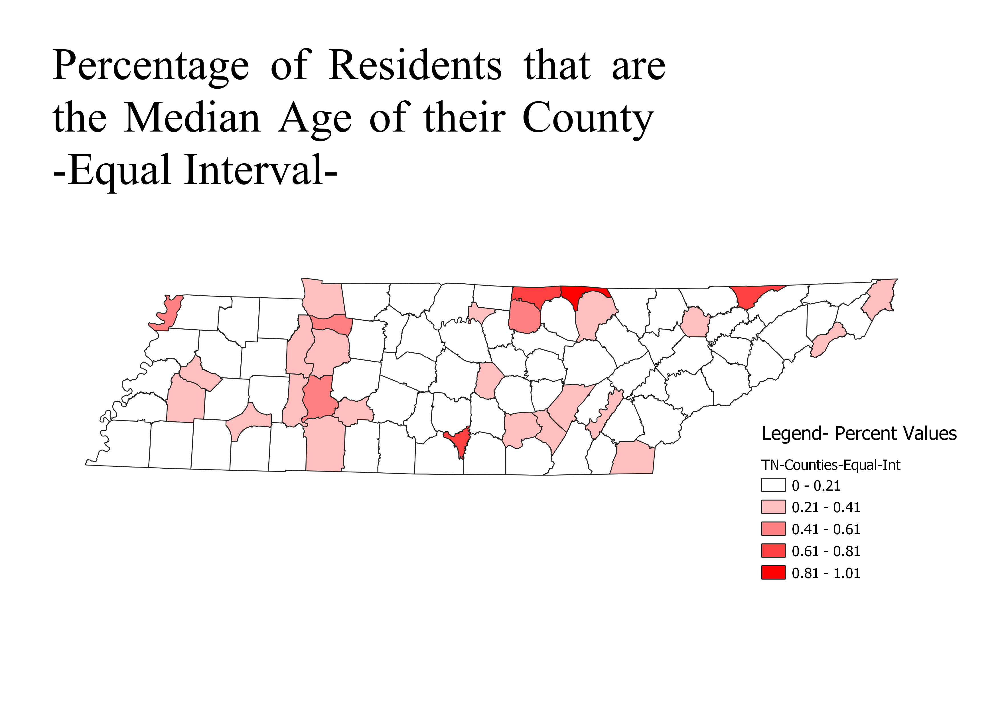
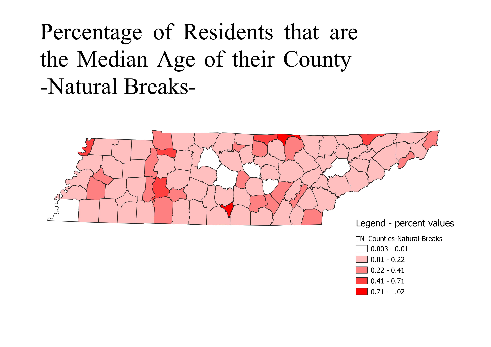
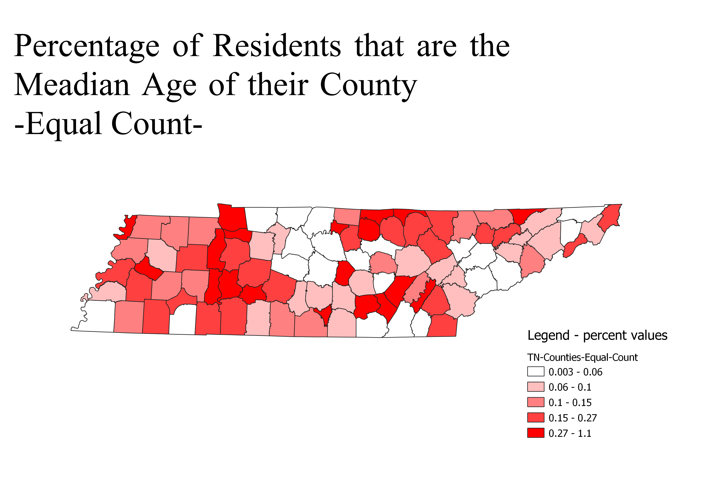

Homework 6 pt. 2: Census data ratios and categories
Emma Gates
My data from part 1 is not a ratio or category. It is a quantitative distribrution measure. Therefore, I could not make this into a ratio. I did however, make a percent. My maps show the percent of people who actually are the median age. It may not show much but it is interesting to see the ammount of perciseness to the median.
Category: Equal Interval -
It really just divides the classes into equal groups. This does not distrubute the results well, it only takes the classes and gives an equal amount based on the minimum and maximum value.

Category: Natural Breaks -
This category arranges each grouping so there is less variation in each class or shading. It is easier to look at and was designed to be eye catching.

Category: Equal Count -
This category tries to bin the same count of features in each of the 5 classes. Equal count tries to arrange groups so they have the same quantity. As a result, the shading will look equally distributed in quantile types of maps which is nice when there is not many data values.

Category: Fixed Interval -
Fixed interval is a category that makes your intervals for you! It can sometimes make too many categories based on what data you present it but it can be rearranged, it take a little more work.

Data used for this project
CSV dataset
Link to shapefile